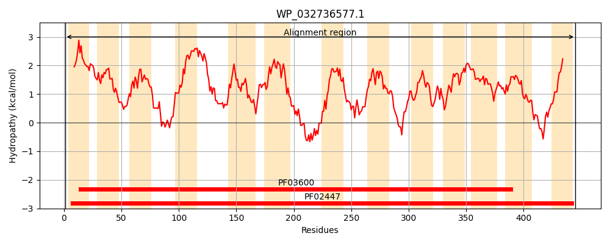
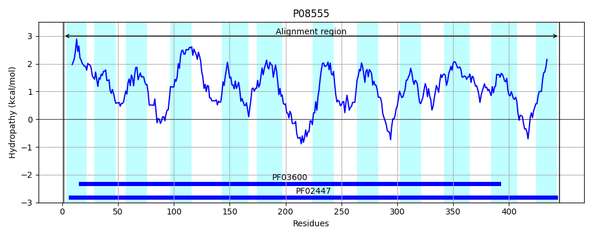
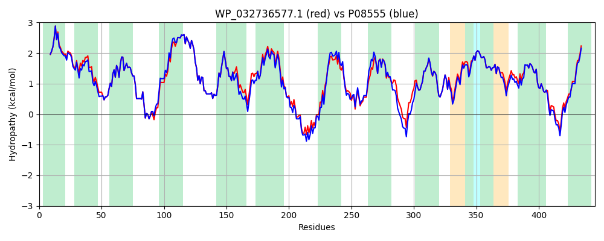

Hit Accession: P08555
Hit TCID: 2.A.8.1.5
Hit Description: gnl|BL_ORD_ID|8467 gnl|TC-DB|P08555|2.A.8.1.5 DsdX permease - Escherichia coli (strain K12).
Mach Len: 445
e:0.000000
Query TMS Count : 13
Hit TMS Count: 12
TMS-Overlap Score: 12.600000
Predicted Substrates:CHEBI:9116;serine
BLAST Alignment:
Score: 2014 , Bit scores: 780 bits, E-value: 0.0e+00, Alignment length: 445, Percentage identity: 90
Query: 1 MESQIWVVSTLLISIVLIVLTIVKLKFHPFLALLLASFFVGAMMGMGPLEMVNAIESGIGGTLGFLAAVIGLGTILGKMMEVSGAAERIGLTLQRCRWLSADVIMVLVGLICGITLFVEVGVVLLIPLAFSIAKKTNTSLLKLAIPLCTALMAVHCVVPPHPAALFVANKLGADIGTVIVYGLLVGLLASLVGGPLFLRLLGNRLPFKSVPAEFSNLDVREESTLPSLGATLFTVLLPIGLMLVKTVAELNMAQGGTLYTVLEFIGNPITAMFIAVFVAYYILGIRRQMGMGVLLTHTENGFGSIANILLIIGAGGAFNAVLKSSGLADSLAVILSNLHMHPILLAWLVALILHAAVGSATVAMMGATAIVAPMLPLYPGVSPEIIAIAIGSGAIGCTIVTDSLFWLVKQYCGASLSETFKYYTTATFIASLLALAATFLLSFII 445
M SQIWVVSTLLISIVLIVLTIVK KFHPFLALLLASFFVG MMGMGPL+MVNAIESGIGGTLGFLAAVIGLGTILGKMMEVSGAAERIGLTLQRCRWLS DVIMVLVGLICGITLFVEVGVVLLIPLAFSIAKKTNTSLLKLAIPLCTALMAVHCVVPPHPAAL+VANKLGADIG+VIVYGLLVGL+ASL+GGPLFL+ LG RLPFK VP EF++L VR+E TLPSLGATLFT+LLPI LMLVKT+AELNMA+ LY ++EFIGNPITAMFIAVFVAYY+LGIR+ M MG +LTHTENGFGSIANILLIIGAGGAFNA+LKSS LAD+LAVILSN+HMHPILLAWLVALILHAAVGSATVAMMGATAIVAPMLPLYP +SPEIIAIAIGSGAIGCTIVTDSLFWLVKQYCGA+L+ETFKYYTTATFIAS++ALA TFLLSFII
Sbjct: 1 MHSQIWVVSTLLISIVLIVLTIVKFKFHPFLALLLASFFVGTMMGMGPLDMVNAIESGIGGTLGFLAAVIGLGTILGKMMEVSGAAERIGLTLQRCRWLSVDVIMVLVGLICGITLFVEVGVVLLIPLAFSIAKKTNTSLLKLAIPLCTALMAVHCVVPPHPAALYVANKLGADIGSVIVYGLLVGLMASLIGGPLFLKFLGQRLPFKPVPTEFADLKVRDEKTLPSLGATLFTILLPIALMLVKTIAELNMARESGLYILVEFIGNPITAMFIAVFVAYYVLGIRQHMSMGTMLTHTENGFGSIANILLIIGAGGAFNAILKSSSLADTLAVILSNMHMHPILLAWLVALILHAAVGSATVAMMGATAIVAPMLPLYPDISPEIIAIAIGSGAIGCTIVTDSLFWLVKQYCGATLNETFKYYTTATFIASVVALAGTFLLSFII 445 | Protein Hydropathy Plots: |
|---|
|  |  |
Pairwise Alignment-Hydropathy Plot:
|
|---|
|  |